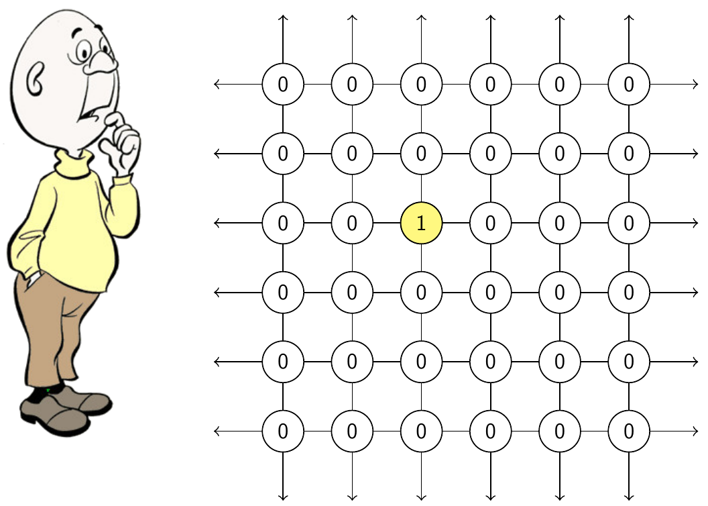

Misc
Seminars
- Seminario de sistemas dinámicos de Santiago
- Coloquio de matemáticas Las Palmeras
- Seminario “compartamos lo que sabemos de grupos”
Conferences
Future events
- Workshop on group dynamics Montevideo, Uruguay, October 2026.
- Young Measured Group Theory (YMGT) Institut Pascal, France, July 2027.
Past events
- XXVII International Workshop for Young Mathematicians "Dynamical Systems" Kraków, Poland, September 2026.
- Chilean–Polish Mathematical Meeting Wroclaw, Poland, September 2026.
- Dyadisc 9: Expensive Dynamics - The dynamic youth speaks out Saint-Valery-sur-Somme, France, June 2026.
- Groups and Dynamics: Topology, Measure, and Borel Structure Oberwolfach, Germany, April 2026.
- Dynamics in patagonia Puerto Natales, Chile, December 2025.
- Encuentro de Geometría Compleja y Dinámica Holomorfa-Aritmética Temuco, Chile, November 2025.
- Dyadisc 8 University of Picardie Jules Verne (UPJV), Amiens, France, July 2025.
- Groups of dynamical origin American Institute of Mathematics, Pasadena, California, June 2024.
- Dynamics on zero-dimensional spaces: new connections Lorentz Center, May 2024.
- Discrete Mathematics and Computer Science: Groups, Dynamics, Complexity, Words CIRM, February 2024.
- Low Complexity Dynamical Systems Brin Mathematics Research Center, October 2023.
- Group Actions on Cantor Sets Casa matemática Oaxaca, September 2023.
- Group Actions: Dynamics, Measure, Topology University of Münster, Germany, November 2022.
- School: “Combinatorial and Geometric Approaches on Dynamics” CMM, Chile, November 2022.
- Dyadisc 5: S-adicity Université de Liège, Belgium, June 2022.
- École de Jeunes Chercheurs en Informatique Mathématique Virtual, April 2020.
- Fractals and Dynamics Bar-Ilan University, Israel, January 2020.
- Measurable, Borel, and Topological Dynamics CIRM, France, October 2019.
- Symbolic Dynamical Systems Casa Matemática Oaxaca, México, May 2019.
- Thirteenth International Conference on Computability, Complexity and Randomness Universidad Andrés Bello, Santiago, Chile, December 2018.
- Algorithmic questions in Dynamical systems Université Paul Sabatier, Toulouse, France, March 2018.
- Escuela de invierno en grupos y dinámica en México UNAM, Ciudad de México, México, January 2018.
- Current Trends in Dynamical Systems and the Mathematical Legacy of Rufus Bowen University of British Columbia, Vancouver, Canada, August 2017.
- 6th Pingree Park Dynamics Workshop: Foundations and Frontiers in Symbolic Dynamics Pingree park, Colorado, USA, July 2017.
- Wandering seminar Wroclaw, Poland, March 2017.
- Dynamique symbolique, Combinatoire des mots. Calculabilité. Automates CIRM, Marseille, France, January 2017.
- School on information and randomness Santiago, Chile, December 2016.
- Combinatorics, Automata and Number Theory CIRM, Marseille, France, November 2016.
- Transversal aspects of tilings Oléron, France, June 2016.
- Workshop on Symbolic Dynamics over Finitely Presented Groups Santiago, Chile, December 2014.
Links
Organizations
- ProgcompCL Una página dedicada a la programación competitiva en Chile.
- MATh.en.JEANS A french organization which aims to bring the joys of math to schools.
Applications
- Project Euler A repository with hundreds of math/CS problems
- Golly A cellular automata simulator.
- FSM An online tool to draw finite automata and graphs.
- JFLAP A simulator of finite automata, grammars and Turing machines.
- Sage A free alternative to maple/mathematica.

friend key: 766412_FJHCB0aQSNlb36NDq86FcmayO5Lc7TzT
Bonus
- Galería Algunas pinturas de principiante que he realizado.
- Video Un vídeo de presentación para la final de la ACM-ICPC en San Petersburgo. Con la actuación de Jorge Perez, Nicolás Sanhueza And Christian Von Borries.
